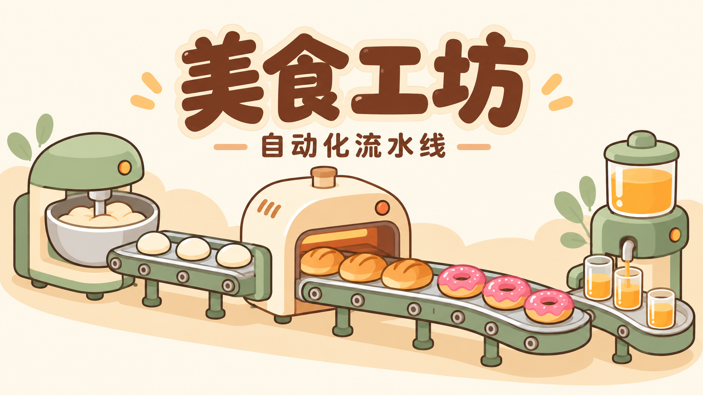

戳戳小面团

建产线 · 接急单 · 做研究
从第一份面包开始。
先备好产线，再接单。暂停不扣时，超时不扣金币。
完成急单赚研究点，选一条发展路线。
进度自动保存在当前浏览器。主菜单、弹窗、后台和暂停时不会生产，也不会扣除急单时间。
当前进度会先备份，然后从新工坊开始。
街坊食铺 · 0 声望
现卖推进工坊订单和急单；入库专门用于合作。仓库满了会停收，不丢货。
三选一，无倒计时；发货后更新。合作与散卖库存不计入普通订单或急单。
发展多条产线，完成目标赚研究点；每项目标只领取一次。
选设备 → 点空格 → 接到出货站
箭头是出口。传送带可拖着铺，每格放 2 件。
点机器可升级；出货口初始 2 秒一件，可升级提速。拆除清空物品并返还实付费用。初始赠送设备收回后，可免费重放。
R 旋转 · 空格暂停 · Esc 选择方向键选格 + Enter 放置滚轮或 ＋ / − 缩放，✥ 拖动画布，⛶ 收起界面进度只保存在当前浏览器，不在离线时生产。
机器可贴着连接；分流器能把面团送到不同支线。配方辅料由机器自带。